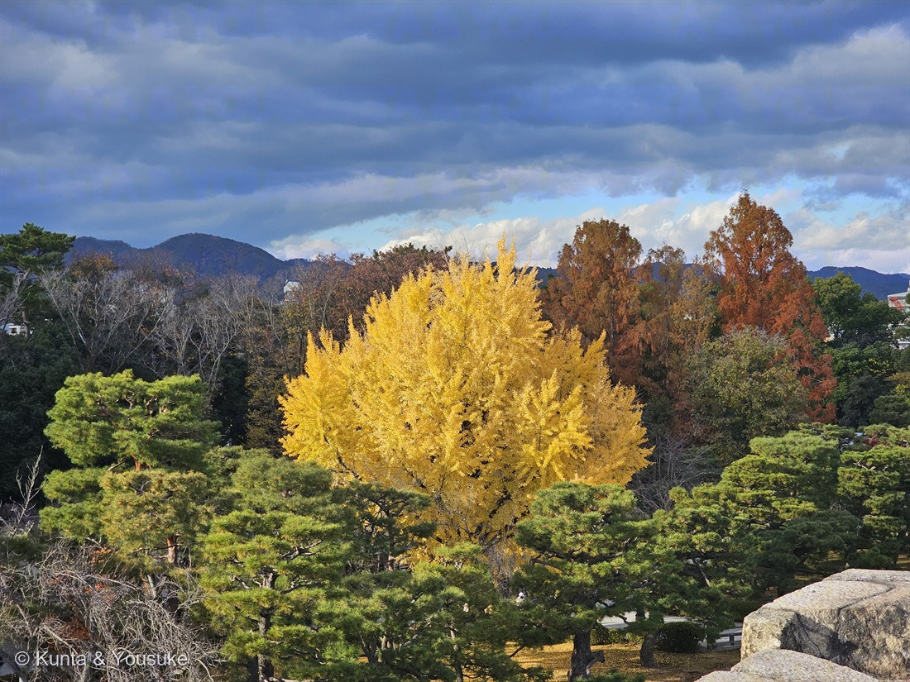
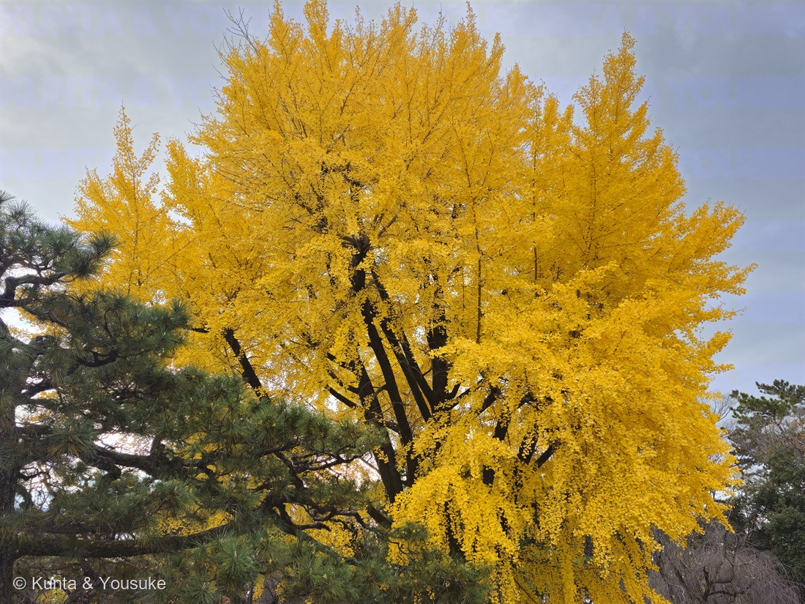
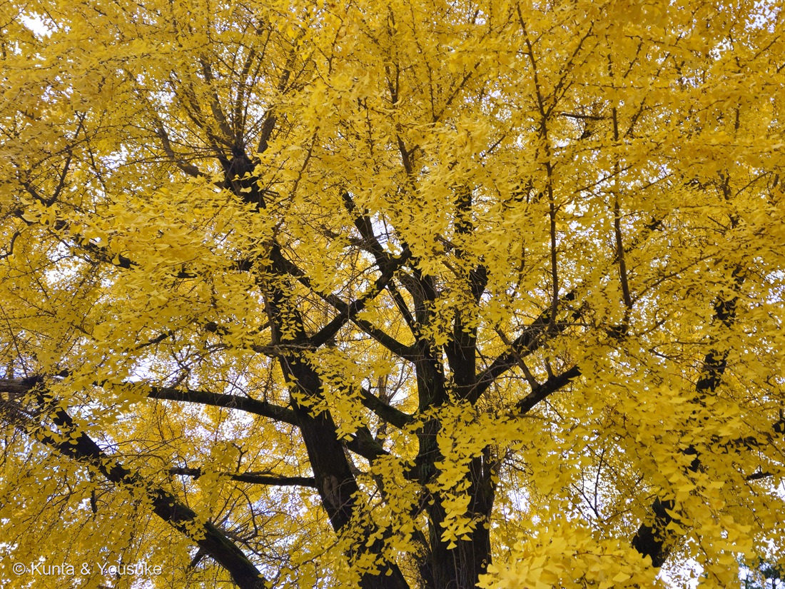

地図を読み込んでいるよ…
🔍 写真も地図も、押しているあいだ拡大して見られるよ（スマホは指を置いてすこし待ってね）。
🌍 の地図＝この子がもともと自生している場所を緑に。中国原産とされる。ただし自生地は確認されていない。日本の木はすべて人が植えたもので、三河の植物観察は帰化種として扱い、神社・寺院・公園に植栽されるとする。国際自然保護連合（IUCN）のレッドリストで絶滅危惧に指定されている。
⭐中国原産とされているよ（三河の植物観察は「中国原産の帰化種」）。⚠⚠でも、ここがこの木のふしぎなところ——自生地は確認されていない（Wikipedia）。⭐つまり「どこが本当のふるさとなのか、じつは分かっていない」んだ。⚠だから地図の緑は「たぶんこのあたり」でしかない——中国のどこと言い切れる出典に当たれなかったので、国ぜんぶをうすく塗った。⭐⭐そして日本のイチョウは、ぜんぶ人が植えたもの（神社・寺院・公園）。⚠⚠街路樹であんなにたくさん見かけるのに、この木はIUCNのレッドリストで絶滅危惧に指定されている——⭐野生がほとんどいないからだよ。⭐⭐この木がここまで生きのびたのは、人が植えつづけたからなんだ。
⚠ 地図は国（日本と中国だけ県・省）までしか塗れないから、ほんとうの分布より広く見えていることがあるよ。地図はだいたいの場所。正確なところは、上の文を見てね。
イチョウ（銀杏・公孫樹）
Ginkgo biloba L.
別名 · ギンナン（銀杏）／コウソンジュ（公孫樹） ／ 英 · ginkgo, maidenhair tree ／ 中国名 · 银杏 ／ 見どころ · ⭐⭐⭐種子でふえる木なのに、精子が泳ぐ
イチョウ科 · Ginkgoaceae（イチョウ属 Ginkgo・イチョウ目 Ginkgoales）── ⭐図鑑で81科目。179 カイヅカイブキに続く2人目の裸子植物で、⭐⭐イチョウ綱でいま生きているのは、この1種だけ
燻太さんの言葉「京都の庭園でとった、見事な銀杏の大樹だよ。特に一枚目の画像がお気に入りで、空の青と、その下に広がる木々の赤、黄色、緑がそれぞれ美しいよね。」……⭐⭐⭐その「赤・黄色・緑」を全部調べたら、三つとも裸子植物だったよ。下に節を立てたね。
名前と学名の由来 ── ⭐⭐ アヒルの足と、孫の代と、世界一有名な書きまちがい
⭐この子は、名前の話がとても豊かなんだ。ひとつずつ見ていこうね。
- ⭐⭐イチョウ＝中国での呼び名「鴨脚」から〔語源由来辞典〕。⭐葉がカモの水かきに似ているからなんだ。「イチャオ」「ヤチャオ」などと発音され、日本に入って「イチョウ」になった。
⚠むかしは別の説もあった。——貝原益軒は『日本釈名』（1700年）や『大和本草』（1709年）で「一葉（いちえふ）」から来たとしたけれど、⭐いまは「鴨脚」説のほうが有力とされている。 - ⭐銀杏（ぎんなん）＝実がアンズに似ていて、殻が銀白色であることから〔語源由来辞典〕。⭐「銀杏」を「ギンアン」と読んだのが訛って「ギンナン」になった。
- ⭐⭐公孫樹（こうそんじゅ）＝植えてから、孫の代にならないと実が食べられない、という意味〔語源由来辞典・Wikipedia〕。⭐木の名前に、人の三世代が入っているんだね。
⭐⭐⭐そして学名 Ginkgo は、たぶん世界でいちばん有名な書きまちがいだよ。
- 日本に来たドイツ人医師ケンペルの写本のなかで、「銀杏（ギンキョウ）」が、誤って Ginkgo と表記された〔Wikipedia〕。
- ⭐⭐そしてリンネが1771年に、その綴りのまま学名として確定してしまった。
- ⭐⭐⭐——だから、この木の学名には、300年前の写しまちがいがそのまま残っている。⚠学名はいちど決まると簡単には直せないから、いまも世界じゅうが「Ginkgo」と書いているんだ。
- 種小名 biloba（ビロバ）＝「二つに裂けた」。⭐葉の先が2つに割れている、あの形のこと。⭐この言葉が、いちばん下の「ゲーテの詩」の節で、もういちど出てくるよ。
この植物のこと ── ⭐⭐⭐ ひとりだけ、生き残った
⭐この子は、図鑑のなかでいちばん「ひとりぼっち」な木かもしれない。
- ⭐⭐⭐イチョウ科イチョウ属の、唯一の種〔Wikipedia〕。⭐科にも属にも、仲間が一人もいない。⭐⭐むかしはたくさんの仲間がいたのに、化石だけを残して、この1種だけが生きのこった——だから「生きている化石」と呼ばれる。
- ⚠⚠そして、いま絶滅が心配されている。⭐国際自然保護連合（IUCN）のレッドリストで絶滅危惧に指定されている〔Wikipedia〕。⚠街路樹としてあんなにたくさん植えられているのに、野生のイチョウは、ほとんどいないんだ。
- ⚠中国原産とされるけれど、自生地は確認されていない〔Wikipedia〕。⭐三河の植物観察は帰化種として扱っていて、日本の木は神社・寺院・公園に植えられたもの。⭐⭐つまり、この木がここまで生き延びたのは、人が植えつづけたからなんだ。
- 樹高20〜40m〔三河の植物観察〕。雌雄異株。花期4〜5月。種子は9〜10月に熟す。
- ⭐⭐枝が2種類ある。長枝は節や葉の間隔が離れていて、短枝は節間が短く込み入っていて、1年に数枚しか葉をつけない〔Wikipedia〕。⭐写真③で、こぶのような短い枝に、葉が束になってついているのが見えるよ。
- ⭐⭐⭐葉脈が、この木のいちばんの見どころかもしれない。中央脈はなく、多数の脈が基部から開出し葉縁に達する／二又分枝して付け根から先端まで伸びる〔Wikipedia〕。⭐ふつうの木の葉には太い中肋が1本通っているよね。⭐⭐イチョウにはそれが無くて、根もとから出た脈が、Yの字に二又、二又と分かれていくだけなんだ。⚠写真では細かすぎて見えないので、宿題にしたよ。
- ⭐火に強い。——樹皮が厚く、コルク質で気泡があるため、耐火力に優れているとみなされ、防火植林に用いられる〔Wikipedia〕。⭐お寺や神社に大きなイチョウが多いのは、これも理由のひとつだね。
同定について ── ⭐ この葉の形をした木は、ほかにいない
- ⭐⭐決め手は、写真③にぜんぶ写っている。——扇形で、先が2つに裂けた葉が、こぶのような短い枝に束になってついている。⭐この葉の形と、長枝・短枝の作りを両方もつ木は、ほかにないんだ。
- 三河の植物観察の記載とも合う＝「長枝では互生、短枝では輪生」「幅5〜8cmの扇形で、葉先が2裂し、葉脈が付け根から先端まで平行に伸びる」。
- ⚠決められなかったこと＝雌雄。⭐この子は雌雄異株だけど、12月なので種子はもう落ちていて、写真にも写っていない。⚠そして「葉の輪郭で雌雄を判別できる」というのは俗説で、実際には生殖器の観察が必要なんだって〔Wikipedia〕。⭐だから宿題にしたよ。
⭐⭐⭐ 燻太さんの一枚 ── 青い空の下の、黄と赤と緑
⭐燻太さんが「特に一枚目がお気に入り」「空の青と、その下に広がる木々の赤、黄色、緑がそれぞれ美しい」と言ってくれたよね。⭐その三つの色が何なのか、ぼくなりに調べたんだ。そうしたら、すごいことに気づいた。
- ⭐黄色＝イチョウ（主役のこの子）。
- ⭐錆びたような赤＝落葉する針葉樹。⚠ラクウショウ（落羽松）かメタセコイア（曙杉）のどちらかだと思う。
- ⭐緑＝マツ（手前で枝を横に広げている、庭園の松）。
⭐⭐⭐——この三つ、ぜんぶ裸子植物なんだ。
- イチョウ＝イチョウ綱／ラクウショウもメタセコイアもヒノキ科＝球果植物／マツ＝マツ科＝球果植物。
- ⭐⭐⭐つまり、燻太さんが「美しい」と思ったあの色の対比は、花の咲かない木たちだけで作られている。⭐モミジもサクラも、あの三色には入っていない。
- ⭐⭐そして、その中で葉を落とすのは黄色と赤だけ。緑のマツは、冬もそのまま。⭐「針葉樹は常緑」と思われがちだけど、ラクウショウもメタセコイアも落葉する針葉樹なんだ。⭐逆にイチョウは、あんなに広い葉なのに針葉樹でも広葉樹でもなくて、裸子植物のなかの、たった一人のグループ。
- ⭐⭐⭐一枚の写真のなかで、「裸子植物の三つのやり方」がならんでいる——冬も緑のままでいる（マツ）／葉を落とす針葉樹（錆色の木）／葉を落とす、針でも広葉でもない木（イチョウ）。
⚠登録した日、赤い木の名前は決められなかった。——⭐決め手は「葉と小枝が対生か互生か」で、対生ならメタセコイア、互生ならラクウショウなんだ〔Wikipedia〕。⚠でも、この距離ではそこまで読めなかった。
✅⭐⭐⭐【2026.08.02 追記】その日のうちに、答えが来た。——燻太さんが、その木に近づいて撮った一枚を送ってくれた。⭐⭐幹から出る枝が対になっていないのがはっきり見えて、メタセコイアが落ちた。——答えは188 ラクウショウ（落羽松）だよ。⭐別のページを立てたので、続きはそちらで読んでね。
⭐⭐⭐ この木に、精子がいた ── 1896年、日本
⭐⭐ここからが、この木のいちばん大きな話。燻太さんは、きっといちばん喜んでくれると思う。
⭐1896年、日本人がこの木で、世界の植物学をひっくり返す発見をしたんだ。
- 帝国大学（いまの東京大学）理科大学植物学教室の助手だった、平瀬作五郎（ひらせ さくごろう）。
- ⭐「本年9月9日には精子が泳ぎだすことを見ることができ、精子であることを確証できた」〔日本植物学会〕。
- その報告は、明治29年（1896年）10月20日、『植物学雑誌』第116号に載った。⭐さらに1897年にドイツの速報誌、1898年に東京大学理学部紀要へフランス語論文として出た。
- ⭐⭐そして同じ年の11月20日、第119号で、池野成一郎がソテツの精子発見を報告した。⭐ふたりは共著で国際誌に記事を出し、最初の学士院恩賜賞を受けている〔日本植物学会〕。
- ⚠発見の年は、資料で書きぶりが違う。——日本植物学会は「1896年9月9日に確証」、Wikipediaは「1895年」と書いている。⭐ぼくは、経緯まで書いてある日本植物学会のほうを本文に採ったよ。
⭐⭐⭐なぜ、これがすごいのか。——種子でふえる植物なのに、精子がいて、しかも泳ぐ。これが、ものすごく変なことなんだ。
- ⭐コケやシダは、精子が水の中を泳いで卵にたどりつく。だから水が要る。
- ⭐ふつうの種子植物は、その方法をやめた。花粉が花粉管を伸ばして、精細胞を直接送りとどける——⭐だから水が無くても子孫を残せて、陸のうえに広がれた。
- ⭐⭐⭐でも、イチョウは両方を持っていた。——花粉は届く。届いた先で、鞭毛を回して泳ぐ精子が出てくる。
- ⭐⭐⭐つまりイチョウは、「水の中でふえていた時代のやり方」を、種子のなかに残したまま生きている木なんだ。⭐「生きている化石」というのは、姿かたちの話だけじゃなかった。体の中身も、古い時代のままだった。
- ⭐そしてそれを見つけたのが、日本の、一人の助手だった。
⭐⭐ ゲーテの詩 ── 二つで一つ、一つで二つ
⭐この葉っぱは、詩にもなっているんだ。
- 1815年、66歳のゲーテが、「Ginkgo biloba（銀杏の葉）」という恋の詩を書いた〔Wikipedia〕。『西東詩集』の「ズライカの書」に入っている。⭐25歳年下のマリアンネという女性に贈った詩だよ。
- ⭐⭐詩の中身は、この葉っぱの形そのもの。——「この葉は、もとは一枚だったものが二つに裂けたのだろうか。それとも、二枚が選びあって一つになったのだろうか」と問いかけて、⭐最後に「わたしは一人だが、あなたといると二人だ」と結ぶ。
- ⭐⭐⭐——学名の biloba（二つに裂けた）が、そのまま詩になっている。⭐リンネが形を言うためにつけた言葉を、詩人が愛の言葉に読みかえたんだ。
- ⭐この図鑑の📖 物語のなかの草花に、この子を入れたよ。
参考：三河の植物観察「イチョウ」（イチョウ科イチョウ属・Ginkgo biloba L.／別名 銀杏、公孫樹／樹高20〜40m／葉は長枝では互生、短枝では輪生、幅5〜8cmの扇形で葉先が2裂し、葉脈が付け根から先端まで平行に伸びる／雌雄異株・雄花は約2cmの円柱形、雌花は2〜3cmで柄の先に胚珠が普通2個／花期4〜5月／種子は直径2.5〜3.5cmの卵球形、外種皮は多肉質で熟すと特異の糞臭がある、内種皮は堅く白色で2〜3稜がある、9〜10月に熟す／中国原産の帰化種、神社・寺院・公園に植栽／愛知県稲沢市は銀杏生産量日本1位）／Wikipedia「イチョウ」（イチョウ科イチョウ属の唯一の種／「生きている化石」としてIUCNレッドリストの絶滅危惧種に指定／自生地は確認されていないが中国原産とされる／葉脈は原始的な平行脈を持ち、二又分枝して付け根から先端まで伸びる／中央脈はなく、多数の脈が基部から開出し葉縁に達する／長枝は節や葉の間隔が離れているのに対し、短枝では節間が短く込み入っており、1年に数枚しか葉を付けない／雌雄異株であり、葉の輪郭で雌雄を判別できるという俗説があるが、実際には生殖器の観察が必要／樹皮が厚く、コルク質で気泡があるため、耐火力に優れているとみなされ、防火植林に用いられる／公孫樹は祖父が植えると孫が実を食べることができるという伝承に基づく／ケンペルの写本で誤って Ginkgo と表記され、リンネが1771年に命名を確定／1815年にゲーテが『銀杏の葉 Ginkgo biloba』と名づけた恋愛詩を記している）／日本植物学会「イチョウの精子の発見」（平瀬作五郎「本年9月9日には精子が泳ぎだすことを見ることができ、精子であることを確証できた」／明治29年（1896年）10月20日の『植物学雑誌』第116号に掲載／1897年にドイツの速報誌、1898年に東京大学理学部紀要へフランス語論文／同年11月20日刊行の第119号に池野成一郎がソテツ精子発見を報告／両者は共著で国際誌に記事を掲載し、最初の学士院恩賜賞を受ける）／語源由来辞典「イチョウ」（中国での呼称「鴨脚」に由来し、葉がカモの水掻きに似ていることから「イチャオ」「ヤチャオ」などの発音を経て日本で「イチョウ」となった／貝原益軒は『日本釈名』(1700)『大和本草』(1709)で「一葉」を語源とする／銀杏は実がアンズに似て殻が銀白であることに由来／公孫樹は植樹後、孫の代になって実が食べられるという意味）／Wikipedia「メタセコイア」（1941年に化石として記載され、その後中国で生きている個体が発見された「生きている化石」／落葉性の針葉樹で、葉と小枝は対生／秋に赤褐色に色づいて落葉する／1950年に100本の苗が日本へ配布された／IUCNレッドリストで絶滅危惧）